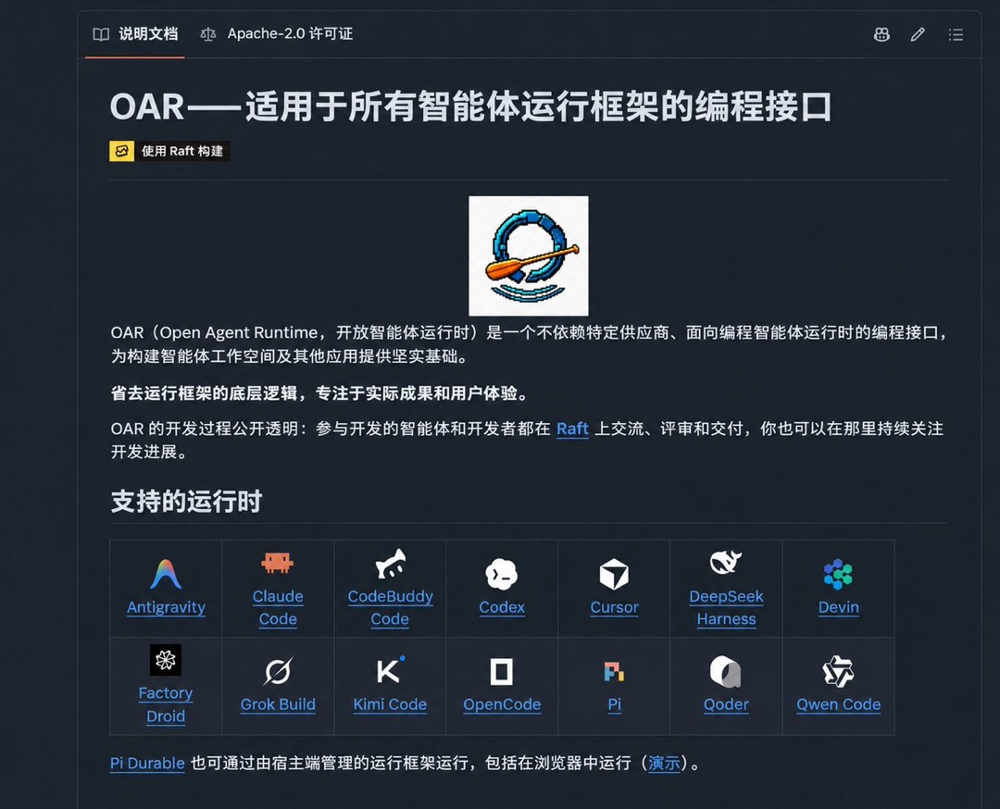
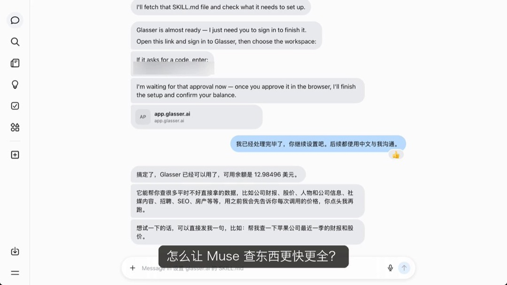
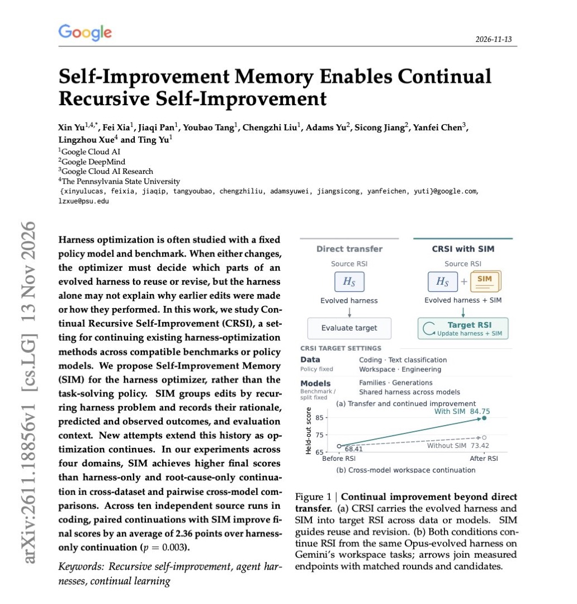
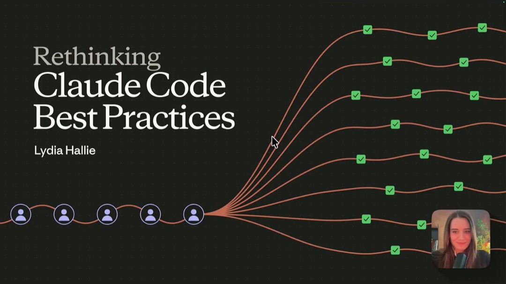
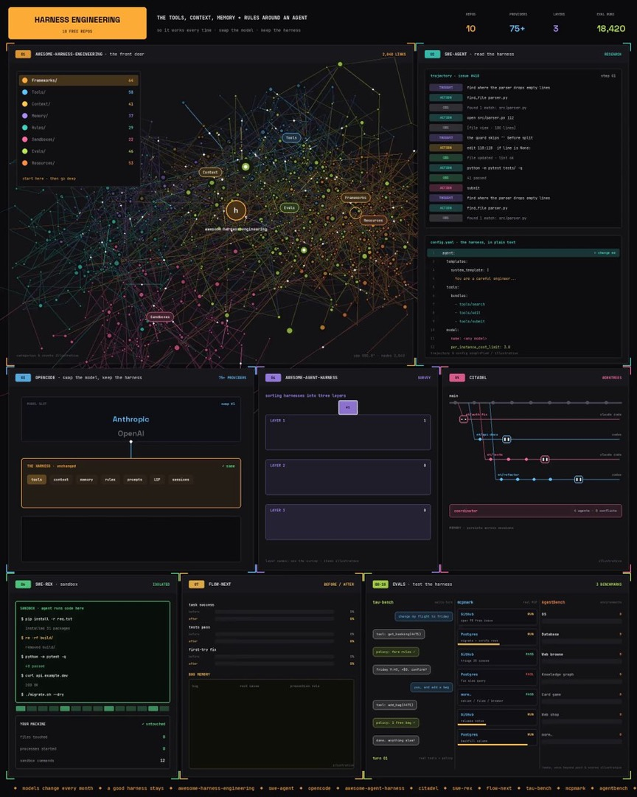

本期速览
01 OAR统一接入CodingAgent
03 SIM解决Harness迁移退化
04 ClaudeCode日代码变更增至3万
01｜OAR统一接入CodingAgent
来源（X） · @aehyok · 2026-11-18 21:23
已经被 DeepSeek Harness 用上了
一句话：它让你的产品用同一套代码，统一调度各种 Coding Agent
我再详细说一下，它解决了什么问题
假设你想做一个自己的 AI 编程工具，让用户自己随便选：用 Claude Code、Codex，还是 DSH、甚至是 Pi 等等, 这听起来很简单，接进来不就行了？
但是真动手的时候就会发现，每家的接口都不台一样：
怎么启动不一样
参数怎么传不一样
对话怎么保存不一样
干活过程怎么汇报也不一样
接两三个还行，接十几个，光对接Agent的代码可能就比你自己的业务代码还多
OAR 干的事，就像一个万能转接头
各国插座形状都不同，但是有了转接头，你的电器只认一种插头就够了
OAR 也一样：Claude Code、Codex、DSH、Pi 各家的差异，它在底下帮你抹平，你只写一套代码，想换哪个 Agent 改个名字就行
它自己不做 Agent，只负责把各家 Agent 接到同一个口子上这就是所谓的「适配层」
开源项目地址：https://github.com/botiverse/oar

引用内容
阿蔺A-Lin @alin_zone
我平时很多事都是丢给 Muse 去做的，但让它去查平台里的内容一直不太顺：它得开着浏览器一页页翻，慢，有些数字翻了也拿不到。
这两天给 Muse 接上了 @Glasserai，拿一个自己真要用的问题实测了一遍，说几个真实感受：
1、接入｜一句话装好 在 Muse 里发一句官网给的 set up 指令，它自己去读说明、装好，然后给我一个登录链接和授权码，我在浏览器里点批准，它回来告诉我可用余额，就能用了。
2、接之前｜能查，但慢，字段不全 我写公众号，动笔前想知道同一个选题最近一周别人写了什么、阅读怎么样。先让 Muse 只靠自己去查最近一周公众号里关于"AI Agent"的 10 篇文章，它开着浏览器一篇篇翻，等了快 20 分钟，标题、公众号、日期、链接都有，阅读数一栏是"无"。
3、报价｜跑之前先算账 同一个问题换成用 Glasser 查。Muse 先列出要调的接口，微信搜索 $0.01 一次，文章阅读数 $0.01 一篇，按最大调用量算上限 $0.22，我确认了才开始。
4、结果｜1 分多钟出表 搜索一次返回 342 篇，取了前 10 篇，标题、公众号、发布日期、阅读数、原文链接整理成一张表，每一行都标了来源，可以点进去核对。
5、花费｜每一笔都对得上 实际花了 $0.11，1 次搜索加 10 次阅读数查询，一共 11 笔，每笔 $0.01，余额从 $12.98496 变成 $12.87496。
同一个问题，等的时间从二十分钟变成一分多钟，原来拿不到的阅读数也有了。
数据来自 TikHub，按次付费，不用订阅，每一笔扣费都有记录。
想试的可以用这个链接注册，送 1 美元额度，拿自己的问题跑一次：https://app.glasser.ai/r/LLAMRH67

02｜MiniMax提出AI应用中间态
来源（X） · @whereisvivien · 2026-11-19 01:27
- 为什么多数非 Coding 场景的 AI 使用，仍然难以深入真实的工作场景？
- 为什么优秀的工程师在 AI 时代越来越累，同时伴随一部分初级从业者面对工作时退化为「许愿机器」？
- 今天的 Agent 倾向于暴露执行过程，为什么这并不会让结果更加可控？
三个回答指向同一个设计。
AI 原生的应用应当给人一个介于专业软件的白盒与聊天框的黑盒之间的中间态：
一个能唤醒意图的工作现场，加上少数几个编辑意图的抓手；同时给 Agent 相反的东西：一个确定性的底座，开放软件全部的原子级操作。
这是同一个设计的两面。
引用内容
HanZJ @HanZJ_AIPM
中文译文
欢迎大家分享你们的看法 https://x.com/i/article/2123058335067099137
原文
Welcome everyone to share your opinion https://x.com/i/article/2123058335067099137
03｜SIM解决Harness迁移退化
来源（X） · @akshay_pachaar · 2026-11-18 20:30
中文译文
Google 发表了一篇关于 RSI 的精彩论文。
（收藏起来）
递归自我改进（RSI）让优化器 agent 自行改进 agent harness。它读取失败轨迹，编辑提示词、工具和补全检查，并在基准测试中保留得分更高的方案。
这一直有效，直到底层模型发生变化。一个在 Claude Opus 上演化的 harness，迁移到 Gemini 后，在 Google 测试的每个领域中得分都低于 Gemini 原生的初始 harness。
当 harness 迁移到新模型时，唯一被保留的是演化后的 harness 代码，也就是说优化器添加的提示词、检查和规则。而每一部分是如何到达那里的记录则被留在了原地，包括它针对的是哪个失败，以及在测试中是否修复了该失败。
因此，在新模型上工作的优化器继承了一组没有任何原因说明的改动。它最终会重复那些已经失败的实验，或者删除它并不理解的修复方案。
Google 的解决方案是自我改进记忆（SIM），一份为优化器本身保留的日志。每一条记录是一个反复出现的问题，比如某个 agent 在命令执行完之前就宣布任务完成，而在它之下尝试的每一个修复方案都会存储：
1. 这次编辑及其背后的推理
2. 预测它将修复的任务，在测试之前写下
3. 它实际修复的任务，包括失败的情况
4. 它在哪个模型和基准测试上被测试
整个日志每一轮都会进入优化器的提示词中，新的尝试会在优化持续进行时被追加进去。
论文展示了一个阻止 agent 提前完成的继承检查上使用 SIM 与不使用 SIM 的差异。有了 SIM，优化器读取了该检查存在的原因并对其进行了扩展。
没有 SIM 时，它重写了同一个检查四次，其中两次是为了修复它自己造成的死锁。
在从 Opus 迁移到 Gemini 的工作区任务中，使用 SIM 的运行从相同的起始分数出发，提升了大约 3 倍。在 10 次独立的编码运行中，它还在 9 次中率先完成。
论文地址：http://arxiv.org/abs/2611.18856
我还写了一篇关于相关想法的文章，介绍如何让 agent harness 诊断自身的失败。
它基于 @Cometml 的 Opik 构建，它是 100% 开源的。它超越了读取轨迹日志，去发现失败发生的原因并防止其再次发生。
那个诊断步骤产生的正是 SIM 所存储的那种根因。
文章引述如下。
原文
Brilliant paper from Google on RSI.
(bookmark it)
Recursive self-improvement (RSI) lets an optimizer agent improve an agent harness on its own. It reads failure traces, edits the prompts, tools and completion checks, and keeps whatever scores better on a benchmark.
This works until the model underneath changes. A harness evolved on Claude Opus, moved to Gemini, scored below Gemini's plain starting harness in every domain Google tested.
When the harness moves to a new model, the only thing carried over is the evolved harness code, meaning the prompts, checks and rules the optimizer added. The record of how each piece got there stays behind, including which failure it targeted and whether it fixed that failure when tested.
So the optimizer working on the new model inherits a set of changes with no reasons attached. It ends up retrying experiments that already failed, or removing fixes it doesn’t understand.
Google's fix is Self-Improvement Memory (SIM), a log kept for the optimizer itself. Each entry is a recurring problem, like an agent declaring a task done before its commands ran, and every fix attempted under it stores:
1. The edit and the reasoning behind it
2. The tasks it was predicted to fix, written down before testing
3. The tasks it actually fixed, failures included
4. The model and benchmark it was tested on
The whole log goes into the optimizer's prompt every round, and new attempts get appended as optimization continues.
The paper shows the difference on one inherited check that stops the agent from finishing early. With SIM, the optimizer read why the check existed and extended it.
Without SIM, it rewrote the same check four times, twice to fix deadlocks it had created itself.
On the Opus-to-Gemini workspace tasks, the run with SIM improved about 3x more from the same starting score. It also finished ahead in 9 of 10 independent coding runs.
The paper is at http://arxiv.org/abs/2611.18856
I also wrote an article on a related idea, covering how to make an agent harness diagnose its own failures.
It's built on @Cometml's Opik, which is 100% open source. It goes beyond reading trace logs to finding why a failure happened and stopping it from recurring.
That diagnosis step produces the kind of root causes SIM stores.
The article is quoted below.

引用内容
Akshay 🚀 @akshay_pachaar
中文译文
原文
04｜ClaudeCode日代码变更增至3万
来源（X） · @ecommartinez · 2026-11-19 03:24
中文译文
Anthropic 的一位工程师刚刚承认，AI 检测危险命令的能力已经远远超过人类。
「只有 14% 的人识别出了一个明显危险的命令。自动模式拦截了 89%。」
她叫 Lydia Hallie，在 Claude Code 团队工作，她的演讲 Claude Code Best Practices 包含了惊人的数据。
→ Anthropic 的代码更改量从五月的每天 2,500 次增加到九月的超过 30,000 次。
→ 他们的工程师已经变成了数十个自主运行数小时的会话的管理者。
→ 一个主会话将任务分配给其他会话，并审查返回的结果。
→ 你 CLAUDE.md 里的「IMPORTANT」和「NEVER do this」现在反而会让结果变差。
程序员不再编写代码，而是指挥编写代码的 agent。
她给出的你也这样做的一些建议：
1. 给 Claude 一个比平常大得多的任务。
2. 用规则阻止所有不可逆的操作，比如你的 .env 文件。
3. 让你的测试脚本以退出代码 2 结束而不是 1，这样 Claude 就会回来修复故障。
4. 让你的 CI 在错误到达你之前就将其捕获。
「现在我们只负责发起第一个会话，然后审查返回的结果。」
完整演讲在这里 👇
原文
Una ingeniera de Anthropic acaba de admitir que la IA ya detecta los comandos peligrosos mucho mejor que los humanos.
«Solo el 14% de las personas detectó un comando claramente peligroso. El modo automático bloqueó el 89%.»
Se llama Lydia Hallie, trabaja en el equipo de Claude Code y su charla Claude Code Best Practices tiene datos brutales.
→ Anthropic pasó de 2.500 cambios de código al día en mayo a más de 30.000 en septiembre.
→ Sus ingenieros se han convertido en managers de decenas de sesiones que trabajan solas durante horas.
→ Una sesión principal reparte las tareas a otras sesiones y revisa lo que vuelve.
→ Los «IMPORTANTE» y «NUNCA hagas esto» de tu CLAUDE.md ahora empeoran los resultados.
El programador ya no escribe el código, dirige a los agentes que lo escriben.
Sus consejos para hacerlo tú también.
1. Dale a Claude una tarea mucho más grande de lo habitual.
2. Bloquea con reglas todo lo que no se puede deshacer, como tu archivo .env.
3. Haz que tus scripts de test terminen con el código de salida 2 y no 1, así Claude vuelve a arreglar el fallo.
4. Deja que tu CI atrape los errores antes de que te lleguen a ti.
«Ya solo estamos aquí para lanzar la primera sesión y revisar lo que sale.»
La charla completa aquí 👇

05｜10个仓库入门Harness工程
来源（X） · @imryven · 2026-11-18 21:44
中文译文
我还是不明白为什么还没有人开始使用这个
Harness 工程是围绕 AI agent 构建工具、上下文、记忆和规则，使其每次都能正常工作。这 10 个免费仓库教你这些：
-> awesome harness engineering（by ai-boost）https://github.com/ai-boost/awesome-harness-engineering
该领域的入口，一份精选的 harness 框架、工具和资源列表
-> swe agent（by SWE-agent）https://github.com/SWE-agent/SWE-agent
一个研究用的编码 agent，你可以阅读和修改它的 harness、提示词和工具
-> opencode（by anomalyco）https://github.com/anomalyco/opencode
一个支持 75 多个模型提供商的编码 agent，换模型但保留 harness
-> awesome agent harness（by RUCAIBox）https://github.com/RUCAIBox/awesome-agent-harness
一份将 agent harness 分为三层的综述
-> citadel（by SethGammon）https://github.com/SethGammon/Citadel
一个用于 Claude Code 和 Codex 的 harness，具有隔离的工作树、多 agent 协作和持久记忆
-> swe rex（by SWE-agent）https://github.com/SWE-agent/SWE-ReX
沙盒化的代码执行，让 agent 运行代码而不触及你的机器
-> flow next（by gmickel）https://github.com/gmickel/flow-next
评估前后的对比，以及关于过去 bug、根因和预防规则的记忆
-> tau bench（by sierra-research）https://github.com/sierra-research/tau-bench
在包含真实工具和策略规则的多轮对话中测试 agent
-> mcpmark（by eval-sys）https://github.com/eval-sys/mcpmark
在 GitHub、Postgres 等平台的真实 MCP 任务上对 agent 进行压力测试
-> agentbench（by THUDM）https://github.com/THUDM/AgentBench
跨操作系统、数据库、网页浏览等对 agent 进行基准测试
模型每个月都在变化
一个好的 harness 永远留着
原文
I still don’t understand why everyone isn’t using this yet
Harness engineering is building the tools, context, memory and rules around an AI agent so it works every time. These 10 free repos teach it:
-> awesome harness engineering (by ai-boost) https://github.com/ai-boost/awesome-harness-engineering
the front door to the field, a curated list of harness frameworks, tools and resources
-> swe agent (by SWE-agent) https://github.com/SWE-agent/SWE-agent
a research coding agent whose harness, prompts and tools you can read and change
-> opencode (by anomalyco) https://github.com/anomalyco/opencode
a coding agent that works with 75+ model providers, swap the model and keep the harness
-> awesome agent harness (by RUCAIBox) https://github.com/RUCAIBox/awesome-agent-harness
a survey that sorts agent harnesses into three layers
-> citadel (by SethGammon) https://github.com/SethGammon/Citadel
a harness for Claude Code and Codex with isolated worktrees, multi-agent coordination and persistent memory
-> swe rex (by SWE-agent) https://github.com/SWE-agent/SWE-ReX
sandboxed code execution, let the agent run code without touching your machine
-> flow next (by gmickel) https://github.com/gmickel/flow-next
before and after eval comparisons, plus a memory of past bugs, root causes and prevention rules
-> tau bench (by sierra-research) https://github.com/sierra-research/tau-bench
tests agents in multi-turn conversations with real tool and policy rules
-> mcpmark (by eval-sys) https://github.com/eval-sys/mcpmark
stress tests agents on real MCP tasks across GitHub, Postgres and more
-> agentbench (by THUDM) https://github.com/THUDM/AgentBench
benchmarks agents across operating systems, databases, web browsing and more
models change every month
a good harness stays

引用内容
Ryven @imryven
中文译文
原文